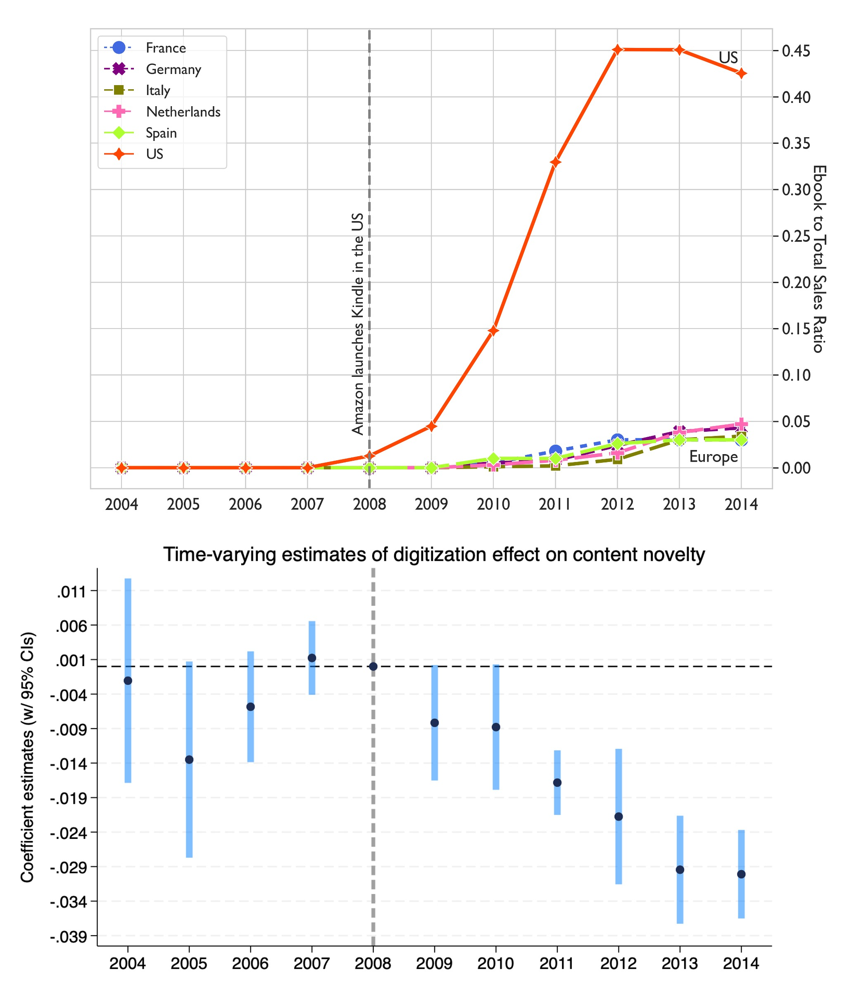
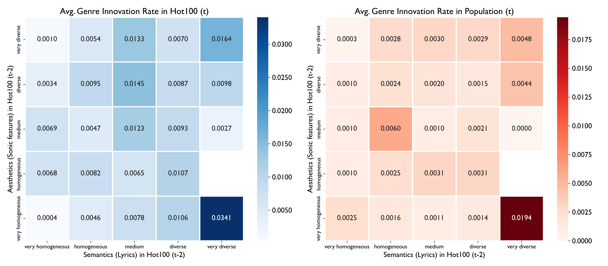
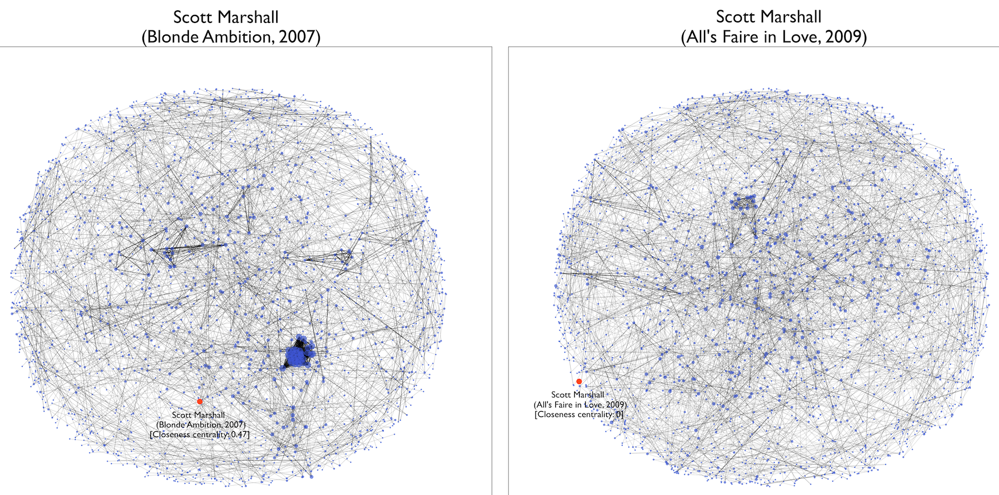
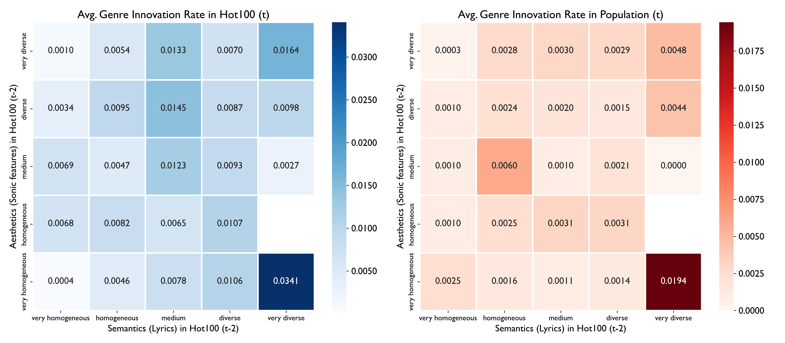
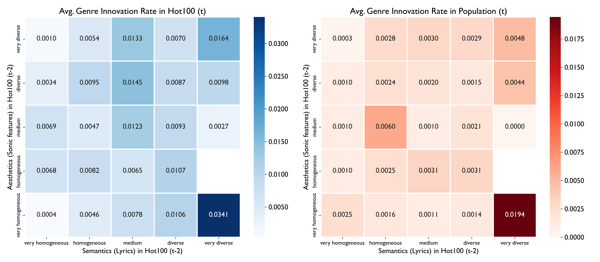

Hi, my name is Khwan, and I am a PhD candidate in Management at INSEAD in Fontainebleau, France. I am on the academic job market in 2024-2025. My research explores
the antecedents and consequences of novelty and innovation at both the individual and organizational levels.
I specifically focus on creative industries such as music, films, publishing, and contemporary arts as my empirical settings.
In doing so, I utilize various organization theories as a theoretical framework and employ computational content analytic tools across my projects.
Research interests:
Organization Theory
Antecedents and Consequences of Creativity, Novelty, and Innovation
Kindle’s Shadow: How Digitization Dims Novelty in the Book Industry
Author(s): Khwan Kim
Digitization has democratized markets, facilitating entry by new and
previously marginalized producers and products and changing the ways that audiences search for
and evaluate producers and products. While this has led to a proliferation of new content,
it is less clear how digitization has affected the characteristics of content created.
In this study, I answer this question by examining how market-level digitization affects
one important characteristic of a creative good---content novelty. I propose and demonstrate that
digitization dilutes the novelty of creative content by: a) mitigating the roles of industry gatekeepers
in discovering and championing novelty, and b) enhancing algorithmic governance that leads creators
and firms towards prevailing popular formulas. To assess my argument, I analyze nearly 300,000 original
books published between 2000 and 2014 in the U.S. and Europe, employing OLS regressions with
fixed effects and a Difference-in-Differences approach. This analysis tests how the adoption of
digital tools and platforms---specifically Amazon's Kindle ecosystem---affects the novelty of new books
compared to previously published works (i.e., book-level novelty) and the extent to which incumbent
authors differentiate beyond their previous work (i.e., within-author novelty). The findings support my
predictions. By integrating organization theory and strategic management, this paper contributes to the
understanding of how digitization reshapes the strategic behavior of creators and the structural dynamics
of the creative industries.
Winner, Best Student Paper Award (2024), OMT Division - Academy of Management
Wharton-INSEAD Doctoral Consortium (Singapore), Nov 2023
Creative Industries Conference (INSEAD, Fontainebleau), Oct 2023
SMS Annual Conference (Toronto), Oct 2023
Medici Summer School (MIT Sloan, Boston), Jun 2023

Publications
Disrupted Routines Anticipate Musical Exploration
Proceedings of the National Academy of Sciences (PNAS) 121 (6) e2306549121, 2024
Author(s): Khwan Kim, Noah Askin, & James A. Evans
Understanding and predicting the emergence and evolution of cultural tastes manifested in consumption patterns is of central interest to
social scientists, analysts of culture, and purveyors of content. Prior research suggests that taste preferences relate to personality traits,
values, shifts in mood, and immigration destination. Understanding everyday patterns of listening and the function music plays in life has
remained elusive, however, despite speculation that musical nostalgia may compensate for local disruption. Using more than one hundred
million streams of 4 million songs by tens of thousands of international listeners from a global music service, we show that breaches
in personal routine are systematically associated with personal musical exploration. As people visited new cities and countries, their
preferences diversified, converging towards their travel destinations. As people experienced the very different disruptions associated with
COVID-19 lockdowns, their preferences diversified further. Personal explorations did not tend to veer toward the global listening average, but away from it,
toward distinctive regional musical content. Exposure to novel music explored during periods of routine disruption showed a persistent influence on listeners’ future consumption
patterns. Across all of these settings, musical preference reflected rather than compensated for life’s surprises, leaving a lasting legacy
on tastes. We explore the relationship between these findings and global patterns of behavior and cultural consumption.
Invited Talk at the Headquarters of Deezer (Paris), Jan 2024
Finalist, The Edgar Schein Best Student Paper Prize at the Berkeley Culture Conference (Haas, Berkeley), Jan 2024
Workshop on Digital Data for Research in Organization Studies (HEC Paris, Paris), Apr 2023
Creative Industries Conference (Columbia Business School, NYC), Oct 2022
Feature-Based Structures of Opportunity: Genre Innovation in the American Popular Music Industry, 1958-2016
American Sociological Review, 89(3), 542-583
Author(s): Khwan Kim & Noah Askin
We offer a new perspective on how cultural markets are structured and the conditions under which innovations are more likely to emerge.
We argue that in addition to organization- and producer-level factors, product features—the locus of marketplace interaction between producers and
consumers—also structure markets. The aggregate distribution of product features, captured via market information regimes, helps producers gauge
where to differentiate or conform and when consumers may be more receptive to the kind of novelty that spawns new genres, our measure of innovation.
We test our arguments with a unique dataset comprising the nearly 25,000 songs that appeared on the Billboard Hot 100 chart from 1958 to 2016,
employing computational methods to capture and analyze the aesthetic (sonic) and semantic (lyrical) features of each song.
Results reveal that new genres are more likely to appear following markets that can be characterized as diverse along one feature dimension while homogenous along the other.
We then connect specific configurations of feature distributions to subsequent song novelty before linking the aesthetic and semantic novelty of individual songs to genre innovation
versus genre evolution. We replicate our findings using industry-wide data and conclude with implications for the study of markets and innovation.
Strategy Science Conference (LMU, München), Jun 2023
Creative Industries Conference (Amsterdam Business School), May 2022
AOM Annual Meeting - Symposium (Cultural Production and Reception), Aug 2021
AOM Annual Meeting - Symposium (Bridging and Blurring Boundaries Between Creativity and Innovation), Aug 2020

Manuscripts Under Review
Point Break? The Process and Impact of Collaborative Breakdowns in Creative Work
Revise & Resubmit at Academy of Management Journal (AMJ)
Author(s): Spencer Harrison, Pat Reilly, Yanbo Song, & Khwan Kim
Creative projects require teams to generate and integrate divergent
ideas, but unresolved disagreements can lead to collaborative
breakdowns, jeopardizing both the project and the participants’
reputations. This study examines the conditions leading to such
breakdowns and their effects through a mixed-method study of
Hollywood film projects, particularly those where a director leaves due to
"creative differences." Our first study, an inductive qualitative analysis of
interviews with Hollywood professionals, identifies tipping points whereby
disagreements escalate into collaborative breakdowns. We also discover
that the term "creative differences" serves as a euphemism to protect
reputations when such breakdowns occur. However, our informants
offered conflicting views on its effectiveness in safeguarding individual
reputations and future employability. In response, we conducted a
second deductive study, using quantitative and network analyses of films
featuring director departures due to creative differences. Our findings
reveal that while the euphemism protects the project's reputation, it fails
to secure the employability of the departing director and the social
standing of the producer. These findings allow us to bridge literatures on
creativity and reputational spillovers, highlighting how dysfunction in
creative teams affects members beyond a single project and why
euphemistic conventions often fail to mitigate the negative impacts of
collaborative breakdowns.

Keep It or Skip It? Sequential Consumption of Music with Reference Effects
Reject & Resubmit at Management Science
Author(s): Abhishek Deshmane, Noah Askin, & Khwan Kim
Sequential consumption of experiential products gives rise to inter-temporal associations.
Developing recommendation algorithms that account for these effects while designing experiences for users can be effective in enhancing user engagement.
Using music streaming as the paradigmatic context of such interactions -- consumption of multiple songs across multiple sessions -- we construct a utility-based theoretical framework
that accounts for users' past consumption, leading to: (a) Recall-based references, that are built on past sessions, and Locally-based references, which are
the result of previous songs in the focal session. Users' heterogeneous responses, rooted in the constructs of habit formation and variety seeking,
help us understand their dynamic preferences, which are further influenced by the memory decay effects. To validate this theory,
we combine music streaming logs of 44,794 paid customers of the global streaming platform, Deezer, across 2018-2019 with the song-attribute data from Spotify to study
the relationship between the platform-recommended song-attribute deviation from user references and user engagement with the platform.
Engagement is measured via song skipping, duration of song listened to, and session abandonment decisions.
We use a matching procedure to correct for the endogeneity issues to get pairs or users with similar music-listening trajectories.
Using a matching procedure in conjunction with reduced-form analyses, we find that a 1% increase in the deviation of the recommended song's attributes
from the Recall and Local references results in an increase of 0.2% (variety seeking) and a drop of -1.9% (habit formation) in the engagement.
total duration of the song listened to, showing a tendency to seek variety with respect to past sessions and consistency within a focal session, respectively.
Finally, the counterfactual analyses show an increase in user engagement levels of 34.7% above the status-quo at Deezer when implementing our recommendations.
An experimental study further supports these results.
Artists Become More Successful Through Multicultural Exploration and Exploitation in the Global Art Market
Author(s): Khwan Kim, Frederic Godart, & William Maddux
In the global art market, the accumulation of symbolic capital is critical to succeed,
but little is known about how it is acquired through an artist’s professional trajectory or work experience. Building on
the literature on multicultural experience, learning, and social evaluation, we investigate how international experiences—specifically
short, culturally distant experiences—help artists develop symbolic capital. We begin by disentangling the multidimensionality of foreign
experiences and classify variance and average cultural distance as indicative of exploration and exploitation respectively.
Using a longitudinal dataset of 28,168 contemporary artists’ global exhibition records from 1994 to 2017, we find that a combination of
foreign exploration and exploitation, characterized by high variance and low average of cultural distances, is most beneficial to building symbolic capital.
AOM Annual Meeting (Chicago), August 2024
Trans-Atlantic Doctoral Consortium (LBS, London), May 2023
Exploration and Exploitation in Cultural Tastes from a Core/Periphery Perspective
Author(s): Khwan Kim
How does category membership impact user behavior? Does a cultural consumer’s openness to novel products depend on what genre she fancies?
To tackle these questions, we first conceptualize genre preference as a network interface where individual consumers can be positioned differently
depending on the genres they favor. We then theorize the consumer’s position in the genre network as indicative of what type of behavioral constraints to be imposed at what level.
This, in turn, influences whether a consumer’s taste structure evolves by exploration or stagnates by exploitation.
Taste exploration by consumers in cultural markets is important because it awakes consumers’ undiscovered taste improving their cultural well-being at the individual consumer level.
It can also serve as a fresh shock to cultural producers that are potentially in a state of organizational inertia because
it signals the growing need for a new niche (Carroll & Swaminathan, 2000; Peterson & Berger, 1975). We argue that
whether a cultural consumer explores or exploits at least partly depends on her genre membership, particularly its relative position in the entire genre network.
Our theoretical approach is inspired by a Core/Periphery perspective of Cattani and Ferriani (2008) that has well documented how actors’ network position
stifles or fosters their ability to generate creative outcomes. Core actors gain legitimacy and resources readily but lack novel exposures.
Periphery actors can bring in more fresh ideas through exposure to diverse stimuli but come short of the endorsement necessary to boost their freshness.
To reconcile this trade-off, Cattani and Ferriani (2008) suggested that “individuals who occupy an intermediate position between the core and the periphery of
their social system are in a privileged position to achieve creative results” because such a position allows for the balance between novel ideas and legitimate support.
Extending this perspective to the consumption dimension, we turn to the effect of an intermediate position on taste exploration.
Wharton-INSEAD Doctoral Consortium (Philadelphia), Oct 2022
AOM Annual Meeting - Symposium(Cultural Production, Creativity, and Networks), Aug 2022
Evolutionary Consecration: Acceptance and Attention to Deviants in the US Film Markets
Author(s): Spencer Harrison, Khwan Kim, & Yanbo Song
In creative industries, gatekeepers often provide assessments of creative products
when they are first introduced to the market. Some products are consecrated as exceptionally
creative while others are consecrated as failures at creativity. In this study, we focus on
comparing these extremes with a middle group: products that seem to gain popular acclaim over
their life time to understand how creative assessments might evolve. In this study we compare
the evolution of audience evaluations of Oscar nominees, Razzie nominees, and Cult films. Our
results show that all films evolve in popular audience away from their initial assessments as
offered by gatekeepers. Notably, Cult films maintain greater attention over time (whereas Oscar and
Razzie nominated films show steeper declines) and thematic consensus in reviews begins as diffuse
but becomes focused (whereas Oscar and Razzie nominated films show an opposite pattern). The findings
reframe our understanding of creative assessments and consecration to consider creative assessment
evolution as key to understanding a creative products eventual cultural footprint.
AOM Annual Meeting (Chicago), August 2024
40th EGOS Colloquium (Milan), July 2024
Creative Industries Conference (INSEAD, Fontainebleau), Oct 2023
Creativity Collaboratorium (UCL, London), September 2023
The Collapse and Reconstruction of Relational Boundaries in Musicians
Author(s): Spencer Harrison, Akshita Joshi, Khwan Kim, & Noah Askin
To be posted
AOM Annual Meeting (Chicago), August 2024
Attractiveness and Occupations: A Historical Word Embedding Analysis
Author(s): Kelly A. Nault, Khwan Kim, Marko Pitesa, & Stefan Thau
We investigate the longstanding advantage that attractive
individuals enjoy. This advantage extends into the workplace, where attractive
employees often experience more favorable outcomes than their less attractive
counterparts. We attribute this advantage to measurable differences in traits
and stereotypes that portray attractive individuals as more interesting, genuine,
healthier, and successful. However, research into the stereotype content of
attractiveness and its workplace impact is relatively recent, dating back to the
1970s. Our project adopts a historical perspective to examine how these stereotypes
have evolved, focusing specifically on the relationship between physical
attractiveness and prototypical occupations such as surgeon, lawyer, and maid.
We use word embeddings trained on the Corpus of Historical American English (COHA)
and Google Ngram data to analyze the semantic proximity of words like "beautiful"
and "ugly" across decades. Our results indicate a robust and consistent positive
stereotype of attractiveness, with "beautiful" consistently linked to positive terms,
while "ugly" is associated with a more diverse and less stable set of negative terms.
We also reveal that occupations have increasingly become associated with the concept
of beauty over time, suggesting that the attractiveness advantage in occupational
sorting may be growing. This trend may be due to increased occupational choice and
employer selection processes favoring attractive candidates. By examining the
stereotype content of beauty and ugliness and their impact on occupational sorting,
we extend the understanding of physical attractiveness stereotypes beyond the 1970s
and highlight the nuanced differences between beauty and ugliness in societal discourse.
Our research provides insights into how stereotypes of attractiveness contribute to
professional opportunities for attractive individuals, shedding light on why the
negative effects of being unattractive do not entirely mirror the positive effects of
being attractive.
Old Wine in New Bottles but from Elsewhere? Market Intermediaries as Gatekeepers to Promote Domain Originality
Author(s): Xuege (Cathy) Lu, Heeyon Kim, & Khwan Kim
Although creating novel content is central to creative industries,
commercial pressures often hinder market participants from taking risks for more novelty,
leading to the adaptation of conventional repertoires. Gatekeepers attempt to encourage
novelty by restructuring the rules for artistic awards, which are crucial for building
careers and achieving commercial success. However, it remains unclear whether these
incentives truly foster greater novelty. In our study, we examine market participants'
responses to these incentives, focusing on how directors’ experience levels moderate
such responses. We argue that experienced directors can better afford the risks
associated with novel repertoires and strategically enhance the perceived novelty
of their adaptations. Our analysis of the Broadway show business, particularly
the response to the 2002 Tony Awards rule change favoring novel content, supports
our hypothesis. Experienced directors are more likely to produce novel shows
post-rule change and strategically choose dissimilar titles when adapting existing
ideas. Surprisingly, they also tend to adapt from well-known repertoires,
which we discuss further. Our study contributes to understanding the dynamics
between gatekeepers and market participants by showing that while gatekeepers'
incentives can drive novelty, the ability to respond to these incentives varies
with experience, potentially leading to unintended inequalities. This highlights
the strategic role of market participants in responding to gatekeepers'
interventions and underscores the complexity of fostering innovation in creative fields.


 
